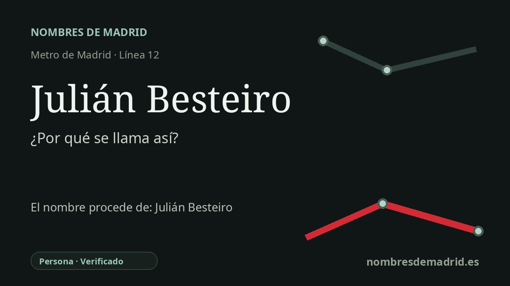

Publicado el · Investigación de Nombres de Madrid · Cómo verificamos cada origen · 7 fuentes consultadas
Respuesta rápida
La estación Julián Besteiro debe su nombre a Julián Besteiro Fernández (1870-1940), profesor y dirigente socialista que presidió las Cortes Constituyentes republicanas entre 1931 y 1933. La parada de la línea 12 se abrió con MetroSur en Leganés en 2003, junto a equipamientos cívicos y culturales que también llevan su nombre.
La historia del nombre
La estación Julián Besteiro toma su nombre de Julián Besteiro Fernández (Madrid, 1870-Carmona, 1940), catedrático universitario, político socialista y dirigente sindical. En el paisaje del transporte, el nombre aparece en Leganés en la línea 12, MetroSur, con accesos en la avenida Rey Juan Carlos I y junto al entorno del Centro Cívico Julián Besteiro, de modo que la estación forma parte de una conmemoración local más amplia de la misma figura.
Besteiro perteneció al mundo reformista e intelectual del Madrid de finales del siglo XIX. La Real Academia de la Historia destaca su formación en la Institución Libre de Enseñanza, proyecto educativo liberal vinculado a Francisco Giner de los Ríos, y su trayectoria posterior como filósofo, catedrático, diputado, sindicalista y presidente del Congreso. Ese trasfondo intelectual es importante: la estación no recuerda un accidente del terreno ni un apodo de barrio, sino a una figura pública asociada a la educación, el socialismo y la política parlamentaria.
Su papel nacional mejor documentado llegó durante la Segunda República. El Congreso de los Diputados recoge que fue elegido presidente interino de las Cortes el 14 de julio de 1931 y presidente definitivo desde el 27 de julio de 1931 hasta el 9 de octubre de 1933. También ocupó puestos dirigentes en el PSOE y la UGT, aunque su relación con ambas organizaciones estuvo marcada por discrepancias estratégicas y por su oposición a la radicalización del socialismo a mediados de la década de 1930.
La estación pertenece a un capítulo muy posterior: MetroSur, la línea 12 circular que enlaza Alcorcón, Móstoles, Fuenlabrada, Getafe y Leganés. La Comunidad de Madrid describe la línea 12 como un anillo de más de 40 kilómetros y 28 estaciones, pensado para conectar los principales municipios del sur metropolitano y funcionar también como metro interior de cada uno de ellos. Julián Besteiro es una de las paradas de Leganés y la página del CRTM confirma su servicio en la línea 12, su zona tarifaria B1 y sus accesos en la avenida Rey Juan Carlos I.
El dato principal está bien apoyado: el nombre conmemora a Julián Besteiro Fernández. Conviene, sin embargo, conservar un matiz en la interpretación: algunos resúmenes dicen simplemente que presidió las Cortes en 1931-1933, pero el Congreso ofrece las fechas exactas y distingue entre la presidencia interina y la definitiva. También hay un matiz local: las fuentes de transporte confirman la estación y su ubicación, y las municipales confirman el cercano Centro Cívico Julián Besteiro, aunque no publican por sí solas un acuerdo formal de denominación de la estación de metro.